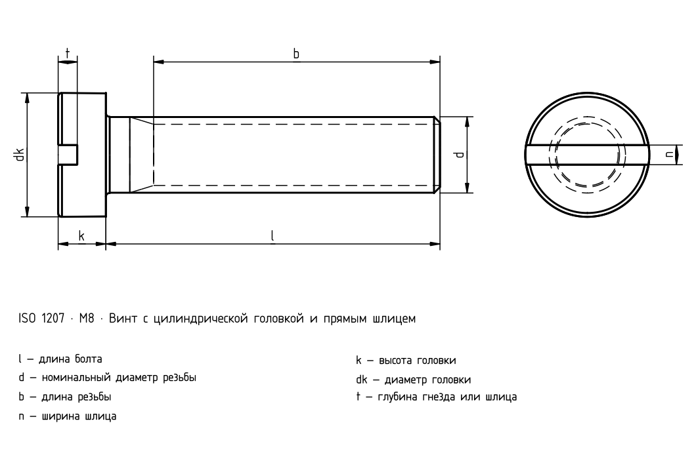

Винты с цилиндрической головкой и шлицем — класс A · ISO 1207
Исторический источник; числовые значения и исключения не полностью сверены с действующим стандартом.

Винты с цилиндрической головкой и шлицем — класс A · ISO 1207
| d | Шаг P | a _max. | b _min. | d _k max.1) | d _k min.1) | d _a max.1) | k _max. | k _min. | n | n _max. | n _min. | r _min. | t _min. | w _min. | x _max. |
|---|---|---|---|---|---|---|---|---|---|---|---|---|---|---|---|
| M1,6 | 0,35 | 0,7 | 25 | 3,0 | 2,86 | 2 | 1,1 | 0,96 | 0,4 | 0,6 | 0,46 | 0,1 | 0,45 | 0,4 | 0,9 |
| M2 | 0,4 | 0,8 | 25 | 3,8 | 3,62 | 2,6 | 1,4 | 1,26 | 0,5 | 0,7 | 0,56 | 0,1 | 0,6 | 0,5 | 1 |
| M2,5 | 0,45 | 0,9 | 25 | 4,5 | 4,32 | 3,1 | 1,8 | 1,66 | 0,6 | 0,8 | 0,66 | 0,1 | 0,7 | 0,7 | 1,1 |
| M3 | 0,5 | 1 | 25 | 5,5 | 5,32 | 3,6 | 2 | 1,86 | 0,8 | 1 | 0,86 | 0,1 | 0,85 | 0,75 | 1,25 |
| (M3,5) | 0,6 | 1,2 | 38 | 6,0 | 5,82 | 4,1 | 2,4 | 2,26 | 1 | 1,2 | 1,06 | 0,1 | 1 | 1 | 1,5 |
| M4 | 0,7 | 1,4 | 38 | 7,0 | 6,78 | 4,7 | 2,6 | 2,46 | 1,2 | 1,51 | 1,26 | 0,2 | 1,1 | 1,1 | 1,75 |
| M5 | 0,8 | 1,6 | 38 | 8,5 | 8,28 | 5,7 | 3,3 | 3,12 | 1,2 | 1,51 | 1,26 | 0,2 | 1,3 | 1,3 | 2 |
| M6 | 1 | 2 | 38 | 10,0 | 9,78 | 6,8 | 3,9 | 3,6 | 1,6 | 1,91 | 1,66 | 0,25 | 1,6 | 1,6 | 2,5 |
| M8 | 1,25 | 2,5 | 38 | 13,0 | 12,73 | 9,2 | 5 | 4,7 | 2 | 2,31 | 2,06 | 0,4 | 2 | 2 | 3,2 |
| M10 | 1,5 | 3 | 38 | 16,0 | 15,73 | 11,2 | 6 | 5,7 | 2,5 | 2,81 | 2,56 | 0,4 | 2,4 | 2,4 | 3,8 |
Винты с цилиндрической головкой и шлицем — класс A · Нормативный контекст
| Пункт | Значение |
|---|---|
| Нормативный контекст | ISO 1207:2011 |
| Класс точности изделия | A |
| Класс прочности | Полный стандарт необходим для проверки размеров, допусков и всех условий. |
Винты с цилиндрической головкой и шлицем — класс A · ISO 1207
| d | Шаг P | a _max. | b _min. | d _k max.1) | d _k min.1) | d _a max.1) |
|---|---|---|---|---|---|---|
| M1,6 | 0,35 | 0,7 | 25 | 3,0 | 2,86 | 2 |
| M2 | 0,4 | 0,8 | 25 | 3,8 | 3,62 | 2,6 |
| M2,5 | 0,45 | 0,9 | 25 | 4,5 | 4,32 | 3,1 |
| M3 | 0,5 | 1 | 25 | 5,5 | 5,32 | 3,6 |
| (M3,5) | 0,6 | 1,2 | 38 | 6,0 | 5,82 | 4,1 |
| M4 | 0,7 | 1,4 | 38 | 7,0 | 6,78 | 4,7 |
| M5 | 0,8 | 1,6 | 38 | 8,5 | 8,28 | 5,7 |
| M6 | 1 | 2 | 38 | 10,0 | 9,78 | 6,8 |
| M8 | 1,25 | 2,5 | 38 | 13,0 | 12,73 | 9,2 |
| M10 | 1,5 | 3 | 38 | 16,0 | 15,73 | 11,2 |
Винты с цилиндрической головкой и шлицем — класс A · ISO 1207
| d | k _max. | k _min. | n | n _max. | n _min. | r _min. |
|---|---|---|---|---|---|---|
| M1,6 | 1,1 | 0,96 | 0,4 | 0,6 | 0,46 | 0,1 |
| M2 | 1,4 | 1,26 | 0,5 | 0,7 | 0,56 | 0,1 |
| M2,5 | 1,8 | 1,66 | 0,6 | 0,8 | 0,66 | 0,1 |
| M3 | 2 | 1,86 | 0,8 | 1 | 0,86 | 0,1 |
| (M3,5) | 2,4 | 2,26 | 1 | 1,2 | 1,06 | 0,1 |
| M4 | 2,6 | 2,46 | 1,2 | 1,51 | 1,26 | 0,2 |
| M5 | 3,3 | 3,12 | 1,2 | 1,51 | 1,26 | 0,2 |
| M6 | 3,9 | 3,6 | 1,6 | 1,91 | 1,66 | 0,25 |
| M8 | 5 | 4,7 | 2 | 2,31 | 2,06 | 0,4 |
| M10 | 6 | 5,7 | 2,5 | 2,81 | 2,56 | 0,4 |
Винты с цилиндрической головкой и шлицем — класс A · ISO 1207
| d | t _min. | w _min. | x _max. |
|---|---|---|---|
| M1,6 | 0,45 | 0,4 | 0,9 |
| M2 | 0,6 | 0,5 | 1 |
| M2,5 | 0,7 | 0,7 | 1,1 |
| M3 | 0,85 | 0,75 | 1,25 |
| (M3,5) | 1 | 1 | 1,5 |
| M4 | 1,1 | 1,1 | 1,75 |
| M5 | 1,3 | 1,3 | 2 |
| M6 | 1,6 | 1,6 | 2,5 |
| M8 | 2 | 2 | 3,2 |
| M10 | 2,4 | 2,4 | 3,8 |
Винты с цилиндрической головкой и шлицем — класс A · Нормативный контекст
| Пункт | Значение |
|---|---|
| Нормативный контекст | ISO 1207:2011 |
| Класс точности изделия | A |
| Класс прочности | Полный стандарт необходим для проверки размеров, допусков и всех условий. |